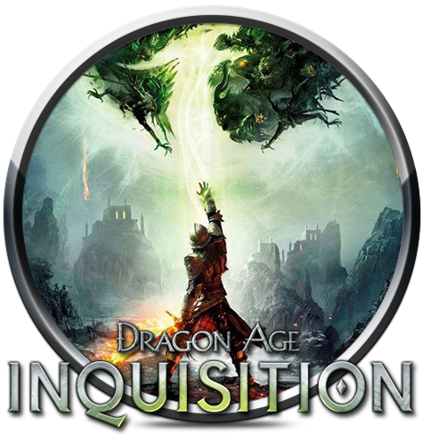

연도를 선택해주세요!
< 2017년도 최다 GOTY 수상작 >
 : 젤다의 전설 브레스 오브 더 와일드
: 젤다의 전설 브레스 오브 더 와일드
▲ 클릭시 해당 게임에 대한 설명을 볼 수 있습니다
< 2017년도 GOTY 수상 현황 >
< 2016년도 최다 GOTY 수상작 >

: 언차티드 4: 해적왕과 최후의 보물
▲ 클릭시 해당 게임에 대한 설명을 볼 수 있습니다
< 2016년도 GOTY 수상 현황 >
< 2015년도 최다 GOTY 수상작 >

: 더 위쳐 3: 와일드 헌트
▲ 클릭시 해당 게임에 대한 설명을 볼 수 있습니다
< 2015년도 GOTY 수상 현황 >
< 2014년도 최다 GOTY 수상작 >

: 드래곤 에이지: 인퀴지션
▲ 클릭시 해당 게임에 대한 설명을 볼 수 있습니다
< 2014년도 GOTY 수상 현황 >